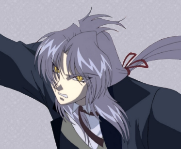

Soul Summoned

Name: Soul Summoned
Age: 1700 (looks 18)
Race: Mystic Vampire
Alignment: Unknown
Siblings: Shurrajou (blood brother)
Marital Status: None
Children: None
Moves: Shadow Meld, Telekinesis, Burning Thunder, Angelic Nova Strike, Blood Saber
Transformations: Evil Within
Level: 50,000
Items: Sonshou Sword
Extra Info:Soul Summoned was born on the 15th Lunar Moon. His mother, a mystic (human with great magical powers) and his father was vampire. Being born of vampire and mystic have allowed him to be immune to sunlight and holy attacks. Being sought out by the Vampire Council, his father and mother where murdered but not before he was hidden. The first years of his life is blur, only remembering his training in the ways of a swordsman. He then met mystic who gave him the Sonshou Sword, a mystical sword that had certain abilities depending on the owner’s heart. It also seemed to have a mind of its own and the ability to take flight... Finding his thirst for blood, thanks to his blood brother, Shurrajou, he went on a rampage for 35 years. His blood massacre stopped when he fell in love with a human named Gem. But nothing ever lasted…his sworn blood brother murdered her in front of Soul’s eyes. Enraged, a battle erupted between Soul and his once blood brother, engulfing the village in flames. In the end, Shurrajou fled and Soul slipped into drowning his worries in alcohol. Over the course of many years into present time, Soul realized that what he was doing was not the way of the sword. Regaining new confidence, Soul decided to hunt down Shurrajou and put an end to his terror. But the hunger for blood still dwelled within him...
AIM Screen Name: SoulSummoned001